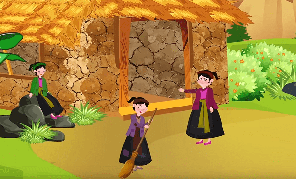
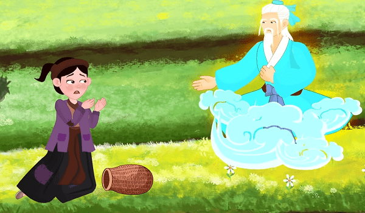
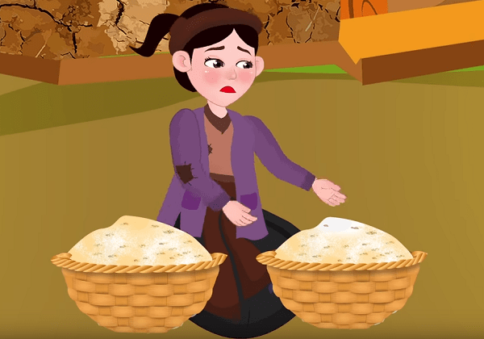
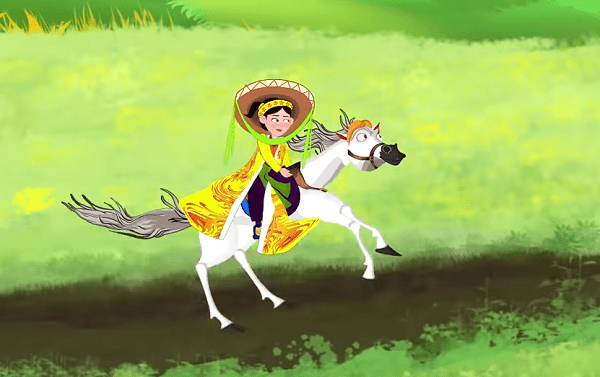
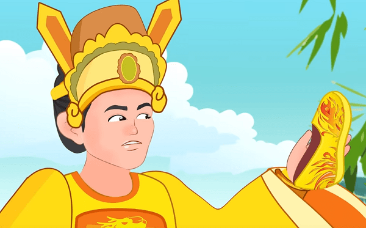
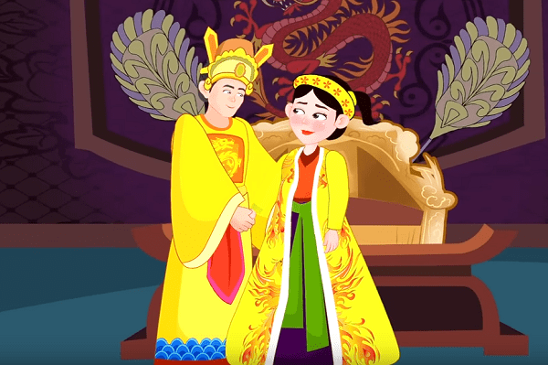

Bà mẹ kế vô cùng cay nghiệt và độc ác. Bà ta bắt Tấm phải làm hết những công việc nặng nhọc trong nhà. Ngược lại, Cám lại vô cùng được chiều chuộng, không phải làm bất cứ việc gì.

Một hôm, bà mẹ đưa cho hai chị em, mỗi người một cái giỏ để ra đồng xúc tép và hứa rằng: “Nếu đứa nào bắt được đầy giỏ tép thì sẽ được thưởng một cái yếm đỏ”. Nghe lời của mẹ, Tấm chăm chỉ siêng năng nên chẳng mấy chốc mà đã được một giỏ đầy vừa cá vừa tép. Còn Cám thì mải chơi, dạo hết từ ruộng nọ sang ruộng kia, hái hoa bắt bướm nên mãi mà chẳng bắt được gì.
Thấy Tấm đã bắt được một giỏ đầy, Cám bảo chị:
- Chị Tấm ơi, chị Tấm! Đầu chị lấm, chị hụp cho sâu, kẻo về mẹ mắng.
Nghe Cám nói vậy, Tấm tin là thật nên liền xuống ao tắm rửa cho sạch. Nhân cơ hội đó, Cám liền trút hết tép của Tấm vào giỏ của mình rồi chạy nhanh về nhà. Khi lên bờ thấy chỉ còn lại chiếc giỏ trống trơn, Tấm ngồi xuống và bưng mặt khóc. Nghe thấy tiếng khóc của Tấm, ông Bụt hiện lên và hỏi:
- Tại sao con khóc?

Tấm đem hết sự tình kể lại cho Bụt nghe. Nghe xong, Bụt bảo rằng:
- Thôi con hãy nín đi! Bây giờ, con hãy thử nhìn vào giỏ xem còn có gì nữa không?
Tấm liền nhìn vào giỏ và phát hiện ra trong giỏ còn lại một con cá bống. Bụt lại cất lời tiếp:
- Con hãy đem con cá bống ấy về rồi thả nuôi trong giếng. Mỗi bữa con chừa lại một bát cơm cho bống ăn. Mỗi lần cho ăn, con nhớ gọi thế này:
Bống bống, bang bang
Lên ăn cơm vàng cơm bạc nhà ta
Chớ ăn cơm hẩm cháo hoa nhà người
Nói xong thì Bụt biến mất. Thế là từ đó, nghe theo lời dặn của Bụt, Tấm thả cá bống xuống giếng và cho ăn hằng ngày. Mỗi khi nghe tiếng Tấm gọi, bống liền bơi lên mặt nước và ăn những hạt cơm của Tấm ném xuống. Chẳng mấy chốc mà bống lớn nhanh như thổi.
Ngày nào cũng thấy Tấm cứ sau bữa ăn đều mang cơm ra giếng nên mụ dì ghẻ sinh nghi nên bảo Cám đi rình. Cám sau khi nghe thấy Tấm gọi bống thì kể lại hết cho mẹ nghe. Tối hôm ấy, mụ dì ghẻ ngọt ngào bảo với Tấm rằng:
- Con ơi con! Làng đã bắt đầu cấm đồng rồi đấy. Mai con đi chăn trâu, phải chăn đồng xa, chớ chăn đồng nhà, làng bắt mất trâu.
Nghe theo lời dặn, ngày hôm sau Tấm đưa trâu đi ăn thật xa. Ở nhà, mẹ con Cám đem cơm ra giếng và gọi bống lên ăn giống như Tấm gọi. Khi bống vừa ngoi lên mặt nước, mẹ con Cám liền bắt lấy bống rồi đem về nhà làm thịt.
Đến chiều sau khi dắt trâu về, Tấm ăn xong vẫn mang bát cơm để dành ra giếng nhưng gọi mãi không thấy bống ngoi lên như mọi khi. Cuối cùng, chỉ thấy cục máu nổi lên trên mặt nước. Thấy vậy, Tấm lại òa lên khóc nức nở. Bụt lại hiện lên và hỏi:
- Con làm sao lại khóc?
Tấm đem sự tình kể lại. Nghe xong, Bụt bảo:
- Cá bống đã bị người ta ăn thịt mất rồi. Thôi, con đừng khóc nữa! Về nhà, con nhặt xương cá, bỏ vào bốn cái lọ rồi đem chôn xuống dưới bốn chân giường con nằm.
Tấm trở về và đi tìm xương bống theo lời Bụt. Nhưng tìm khắp các nơi mà không thấy đâu cả. Bỗng con gà ở đâu chạy ra và bảo Tấm:
- Cục ta cục tác! Cho ta nắm thóc, ta bới xương cho!
Sau khi được Tấm ném thóc cho, gà chạy vào bếp bới một lúc thì thấy xương ngay. Tấm nhặt lấy, bỏ vào lọ và đem chôn dưới chân giường giống như lời Bụt dặn.
Không lâu sau đó, nhà vua mở hội trong mấy đêm ngày. Già trẻ, trai gái đều xúng xính quần áo mới nô nức đi xem hội. Hai mẹ con Cám cũng sắm sửa quần áo đẹp để đi trẩy hội. Tấm xin được đi cùng thì mụ dì ghẻ nguýt dài rồi lấy một đấu gạo trộn lẫn với một đấu thóc, bảo Tấm:
- Khi nào nhặt được riêng gạo và thóc ra hai đấu thì mới được đi xem hội.

Nói xong, hai mẹ con Cám lên đường đi hội. Cảm thấy tủi thân, Tấm khóc nức nở. Bụt lại hiện lên và hỏi:
- Làm sao con khóc?
Tấm chỉ vào cái thúng và thưa với Bụt:
- Dì bắt con phải nhặt riêng thóc ra thóc, gạo ra gạo rồi mới được đi xem hội. Nhưng lúc con nhặt xong thì hội đã tan rồi, không còn gì mà xem nữa ạ.
Bụt nghe xong thì liền sai một đàn chim sẻ xuống sân nhặt thóc và gạo giúp Tấm, chỉ một loáng là xong. Nhưng tấm lại nức nở khóc vì không có quần áo đẹp để đi hội. Bụt lại bảo rằng:
- Con hãy đào những cái lọ xương bống đã chôn ngày trước lên thì sẽ có đủ thứ cho con trẩy hội.
Tấm vâng lời và đào các lọ lên. Lọ thứ nhất mở ra là một bộ váy áo tuyệt đẹp, lọ thứ hai là một đôi hài thêu, lọ thứ ba là một con ngựa nhỏ xíu, nhưng khi vừa đặt xuống đất, con ngựa bỗng chốc biến thành ngựa thật. Lọ cuối cùng là một yên cương vững chắc. Tấm vui mừng không xiết, nhanh chóng thay đồ rồi lên đường vào kinh.

Ngựa phóng một chốc đã đến kinh đô. Thế nhưng, lúc đi qua một cây cầu đá, Tấm lỡ đánh rơi một chiếc hài xuống nước, không làm cách nào lấy lên được.
Khi đoàn của nhà vua đi qua cầu, hai con voi dẫn đầu đoàn lại kêu rống lên và nhất quyết không chịu đi tiếp. Thấy lạ, vua bèn sai quân lính xuống dưới xem xét. Sau một hồi, họ mò được một chiếc hài thêu. Nhà vua ngắm nghía chiếc hài kĩ càng rồi hạ lệnh thông báo tất cả đàn bà con gái đi trẩy hội ướm thử, nếu ai đi vừa chiếc hài này thì vua sẽ lấy làm vợ.

Vậy là các bà, các cô chen nhau đến chỗ thử giày làm cho đám hội càng thêm náo nhiệt. Nhưng chẳng ai đi vừa cả. Mẹ con Cám cũng qua thử nhưng không được. Thấy Tấm cũng đến, Cám nói với mẹ:
- Mẹ ơi, ai như chị Tấm cũng đi thử hài kìa!
Mụ dì ghẻ tỏ ý coi thường nói:
- Chuông khánh còn chẳng ăn ai, nữa là mảnh chĩnh vứt ngoài bờ tre!
Thế nhưng khi Tấm đặt chân vào hài thì vừa như in. Nhà vua vô cùng vui mừng và lập tức rước nàng vào cung.